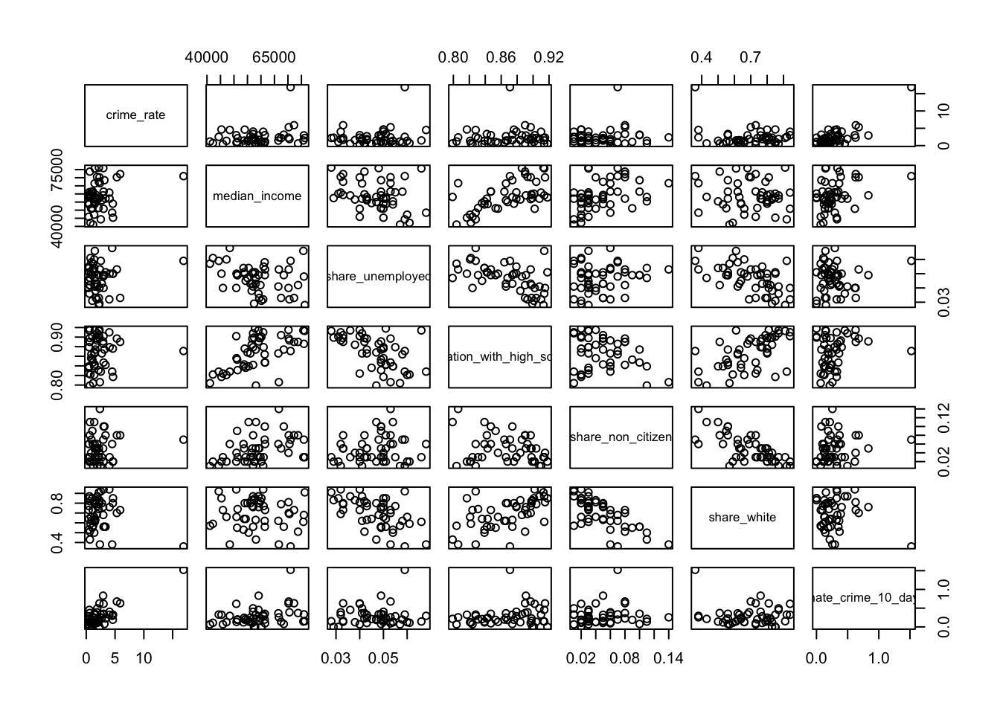
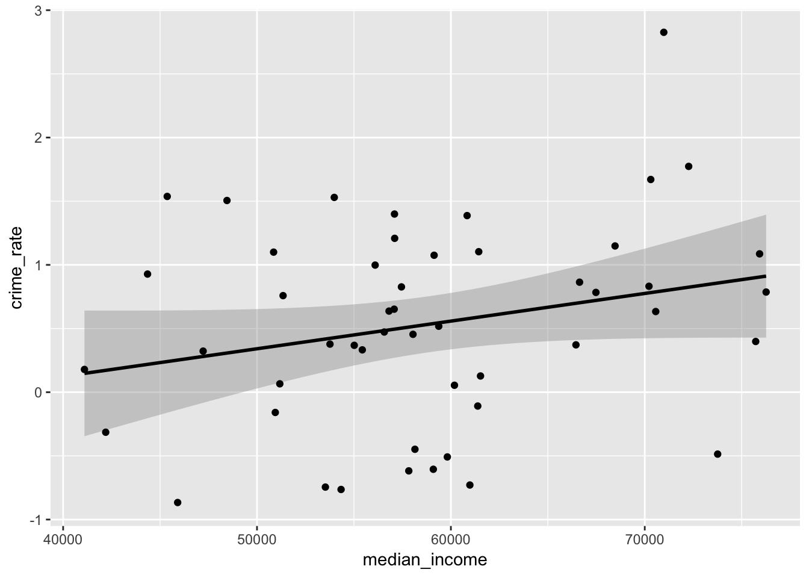

final_project
Kee-Young Shin
December 5, 2018
library(tidyverse)
library(readxl)
library(plotly)Data import
import hate crime incident count from 2005 to 2017
hate_offenses_2017 = read_xls("./data/table-1.xls") %>%
janitor::clean_names() %>%
filter(table_1 == "Total") %>%
mutate(table_1 = str_replace(table_1, "Total", "2017"))
hate_offenses_2016 = read_xls("./data/2016_hatecrime.xls") %>%
janitor::clean_names() %>%
filter(table_1 == "Total") %>%
mutate(table_1 = str_replace(table_1, "Total", "2016")) %>%
select(1:5)
hate_offenses_2015 = read_xls("./data/2015_hatecrime.xls") %>%
janitor::clean_names() %>%
filter(table_1 == "Total") %>%
mutate(table_1 = str_replace(table_1, "Total", "2015"))
hate_offenses_2014 = read_xls("./data/2014_hatecrime.xls") %>%
janitor::clean_names() %>%
filter(table_1 == "Total") %>%
mutate(table_1 = str_replace(table_1, "Total", "2014")) %>%
select(1:5)
hate_offenses_2013 = read_xls("./data/2013_hatecrime.xls") %>%
janitor::clean_names() %>%
filter(table_1 == "Total") %>%
mutate(table_1 = str_replace(table_1, "Total", "2013")) %>%
select(1:5)
hate_offenses_2012 = read_xls("./data/2011_hatecrime.xls") %>%
janitor::clean_names() %>%
filter(table_1 == "Total") %>%
mutate(table_1 = str_replace(table_1, "Total", "2012"))
hate_offenses_2011 = read_xls("./data/2011_hatecrime.xls") %>%
janitor::clean_names() %>%
filter(table_1 == "Total") %>%
mutate(table_1 = str_replace(table_1, "Total", "2011"))
hate_offenses_2010 = read_xls("./data/2010_hatecrime.xls") %>%
janitor::clean_names() %>%
filter(table_1 == "Total") %>%
mutate(table_1 = str_replace(table_1, "Total", "2010"))
hate_offenses_2009 = read_xls("./data/2009_hatecrime.xls") %>%
janitor::clean_names() %>%
filter(table_1 == "Total") %>%
mutate(table_1 = str_replace(table_1, "Total", "2009"))
hate_offenses_2008 = read_xls("./data/2008_hatecrime.xls") %>%
janitor::clean_names() %>%
filter(table_1 == "Total") %>%
mutate(table_1 = str_replace(table_1, "Total", "2008"))
hate_offenses_2007 = read_xls("./data/2007_hatecrime.xls") %>%
janitor::clean_names() %>%
filter(table_1 == "Total") %>%
mutate(table_1 = str_replace(table_1, "Total", "2007"))
hate_offenses_2006 = read_xls("./data/2006_hatecrime.xls") %>%
janitor::clean_names() %>%
filter(table_1 == "Total") %>%
mutate(table_1 = str_replace(table_1, "Total", "2006"))
hate_offenses_2005 = read_xls("./data/2005_hatecrime.xls") %>%
janitor::clean_names() %>%
filter(table_1 == "Total") %>%
mutate(table_1 = str_replace(table_1, "Total", "2005"))
# aggregate data for all years
hatecrime_count_df = rbind(hate_offenses_2017, hate_offenses_2016, hate_offenses_2015,
hate_offenses_2014, hate_offenses_2013, hate_offenses_2012,
hate_offenses_2011, hate_offenses_2010, hate_offenses_2009,
hate_offenses_2008, hate_offenses_2007, hate_offenses_2006,
hate_offenses_2005) %>%
select(1:3)
colnames(hatecrime_count_df) = c("year", "total_incidents", "total_offenses")importing hate crime and predictors dataset
# data in 2016
income = read_csv("./data/Income.csv") %>%
janitor::clean_names()## Parsed with column specification:
## cols(
## Location = col_character(),
## `Median Annual Household Income` = col_character()
## )unemployment = read_csv("./data/Unemployment.csv") %>%
janitor::clean_names()## Parsed with column specification:
## cols(
## Location = col_character(),
## Unemployed = col_double()
## )education = read_csv("./data/Educational_level.csv") %>%
janitor::clean_names()## Parsed with column specification:
## cols(
## Location = col_character(),
## share_population_with_high_school_degree = col_double()
## )ctizenship = read_csv("./data/Ctizenship.csv") %>%
janitor::clean_names()## Parsed with column specification:
## cols(
## Location = col_character(),
## Citizen = col_double(),
## `Non-Citizen` = col_double(),
## Total = col_integer()
## )race = read_csv("./data/Race.csv") %>%
janitor::clean_names()## Parsed with column specification:
## cols(
## Location = col_character(),
## White = col_double(),
## Black = col_character(),
## Hispanic = col_double(),
## Asian = col_character(),
## `American Indian/Alaska Native` = col_character(),
## `Native Hawaiian/Other Pacific Islander` = col_character(),
## `Two Or More Races` = col_character(),
## Total = col_integer(),
## Footnotes = col_integer()
## )vote = read_csv("./data/Vote.csv") %>%
janitor::clean_names()## Parsed with column specification:
## cols(
## Location = col_character(),
## share_voters_voted_trump = col_character()
## )crime_rate = read_excel("./data/2016.xls", range = cell_rows(3:54)) %>%
janitor::clean_names() %>%
filter(participating_state != "Total") %>%
select(location = participating_state, population_covered, total_number_of_incidents_reported) %>%
mutate(crime_rate = total_number_of_incidents_reported/population_covered*100000)
crime_rate_10_days = read_csv("./data/hate_crime_10days.csv") %>%
janitor::clean_names()%>%
select(location = state, hate_crime_10_day = hate_crimes_per_100k_splc)## Parsed with column specification:
## cols(
## state = col_character(),
## hate_crimes_per_100k_splc = col_double()
## )ctizenship =
ctizenship %>%
select(location, non_citizen)
race =
race %>%
select(location, white)
crime_rate =
crime_rate %>%
select(location, crime_rate)
merge_data =
merge(income, unemployment, by = "location") %>%
merge(., education, by = "location") %>%
merge(., ctizenship, by = "location") %>%
merge(., race, by = "location") %>%
merge(., vote, by = "location") %>%
merge(., crime_rate, by = "location") %>%
merge(., crime_rate_10_days, by = "location") %>%
filter(location != "United States") %>%
rename(state = location, share_unemployed = unemployed, share_non_citizen = non_citizen, share_white = white)dataset for annual report in state division
#list
df = list.files(path = "./annual")
#function
read_data = function(x){read_excel(str_c("./annual/", x), range = "A3:E54")%>%
mutate(year = x)}
#map
hate_crime = map(df, read_data)%>%
bind_rows()%>%
janitor::clean_names()%>%
select(-agencies_submitting_incident_reports, -agencies_submitting_incident_reports_2,-agencies_submitting_incident_reports_3)%>%
mutate(year = str_replace(year, ".xls", ""))%>%
select(year, everything())
#set na to 0
hate_crime[is.na(hate_crime)]=0
#complete the final dataset
hate_crime = hate_crime%>%
mutate(total_incident = total_number_of_incidents_reported + total_number_of_incidents_reported_2)%>%
select(year, state = participating_state, population = population_covered, total_incident)%>%
filter(state != "Total") %>%
mutate(annualprop = total_incident/population*100000)%>%
mutate(year = str_replace(year, ".xls", ""))%>%
filter(state!="Guam1")do the further cleaning of the merge data
merge_data = merge_data %>%
mutate(median_annual_household_income = str_replace(median_annual_household_income, ",", "")) %>%
mutate(median_annual_household_income = gsub("\\$", "",median_annual_household_income )) %>%
mutate(median_annual_household_income = as.numeric(median_annual_household_income)) %>%
select(state, median_income = median_annual_household_income, everything())Explore the data
plot change in number of hate crimes over time
hatecrime_count_df %>%
ggplot(aes(x = year, y = total_incidents)) + geom_line(group = 1, color = "blue")
Building the Map of hate crime rate based on 2016
map_data_2016 = merge_data %>%
rbind(c("Hawaii",71223, 0.034, 0.904, 0 ,0.81, '33.1%', 0 ,0)) %>%
as.tibble() %>%
arrange(state)
map_data<-map_data_2016 %>%
mutate(
state = as.factor(state),
code = state.abb[state],
code = c(code[1:8],'DC',code[9:50]),
hover = with(map_data_2016, paste(state,'<br>' ,"share for trump",share_voters_voted_trump)),
crime_rate = as.numeric(crime_rate)
) %>%
select(code, crime_rate, hover)
l <- list(color = toRGB("grey"), width = 1)
g <- list(
scope = 'usa',
projection = list(type = 'albers usa'),
showlakes = F
)
plot_geo(map_data, locationmode = 'USA-states') %>%
add_trace(
z = ~ crime_rate, text = ~hover, locations = ~code,
color = ~ crime_rate, colors = 'Reds',marker = list(line = l)
) %>%
colorbar(title = "Hate crime rate ") %>%
layout(
title = 'Hate crime rate in 2016 all over U.S. ',
geo = g
)crime rate comparision between 10 days after election and 2016 average.
library(reshape2)##
## Attaching package: 'reshape2'## The following object is masked from 'package:tidyr':
##
## smithshate_crime_10days<-read_csv("./data/hate_crime_10days.csv")## Parsed with column specification:
## cols(
## state = col_character(),
## hate_crimes_per_100k_splc = col_double()
## )hate_crime_ave<-hate_crime %>%
na.omit() %>%
filter(year==2016)
compare_rate<-merge(hate_crime_10days, hate_crime_ave, by= "state")
compare_rate %>%
mutate(hate_crimes_10days = hate_crimes_per_100k_splc/10 * 365,
hate_crimes_2016 = annualprop) %>%
select(state, hate_crimes_10days, hate_crimes_2016) %>%
melt(, id = "state") %>%
mutate(state = factor(state, levels = state %>% unique %>% sort(decreasing = T))) %>%
mutate(state = reorder(state, value)) %>%
ggplot(aes(x = state, y = value, fill = variable, group = variable))+
geom_bar(stat="identity", position = "dodge", width = 0.5)+
scale_y_continuous(expand = c(0, 0), limits = c(0, 60))+
coord_flip() +
theme(axis.text.x = element_text(angle = 0, size = 10, hjust = 1),legend.position = "right") +
ggtitle("Hate Crime Rate Before and After Trump Election") +
labs(y = "Hate Crime Rate (per 100,000)", x = "State")
Regression part
regression part
sum(is.na(merge_data))## [1] 0mle = lm(crime_rate~median_income+share_unemployed+share_population_with_high_school_degree+share_non_citizen+ share_white+ crime_rate, data = merge_data)## Warning in model.matrix.default(mt, mf, contrasts): the response appeared
## on the right-hand side and was dropped## Warning in model.matrix.default(mt, mf, contrasts): problem with term 6 in
## model.matrix: no columns are assignedsummary(mle)##
## Call:
## lm(formula = crime_rate ~ median_income + share_unemployed +
## share_population_with_high_school_degree + share_non_citizen +
## share_white + crime_rate, data = merge_data)
##
## Residuals:
## Min 1Q Median 3Q Max
## -4.0409 -1.1745 -0.5750 0.7245 11.7523
##
## Coefficients:
## Estimate Std. Error t value
## (Intercept) -5.432e+00 1.508e+01 -0.360
## median_income 8.688e-05 7.197e-05 1.207
## share_unemployed 3.955e+01 5.074e+01 0.779
## share_population_with_high_school_degree 5.541e+00 2.034e+01 0.272
## share_non_citizen -1.571e+01 2.078e+01 -0.756
## share_white -4.622e+00 4.802e+00 -0.963
## Pr(>|t|)
## (Intercept) 0.720
## median_income 0.234
## share_unemployed 0.440
## share_population_with_high_school_degree 0.787
## share_non_citizen 0.454
## share_white 0.341
##
## Residual standard error: 2.456 on 44 degrees of freedom
## Multiple R-squared: 0.1349, Adjusted R-squared: 0.0366
## F-statistic: 1.372 on 5 and 44 DF, p-value: 0.2531multi.fit = step(mle, direction = 'backward')## Start: AIC=95.47
## crime_rate ~ median_income + share_unemployed + share_population_with_high_school_degree +
## share_non_citizen + share_white + crime_rate## Warning in model.matrix.default(object, data = structure(list(crime_rate =
## c(1.3808898651561, : the response appeared on the right-hand side and was
## dropped## Warning in model.matrix.default(object, data = structure(list(crime_rate
## = c(1.3808898651561, : problem with term 6 in model.matrix: no columns are
## assigned##
## Step: AIC=95.47
## crime_rate ~ median_income + share_unemployed + share_population_with_high_school_degree +
## share_non_citizen + share_white
##
## Df Sum of Sq RSS AIC
## - share_population_with_high_school_degree 1 0.4476 265.92 93.559
## - share_non_citizen 1 3.4486 268.92 94.120
## - share_unemployed 1 3.6656 269.14 94.160
## - share_white 1 5.5897 271.06 94.516
## - median_income 1 8.7930 274.27 95.104
## <none> 265.47 95.474
##
## Step: AIC=93.56
## crime_rate ~ median_income + share_unemployed + share_non_citizen +
## share_white
##
## Df Sum of Sq RSS AIC
## - share_unemployed 1 3.4309 269.35 92.200
## - share_non_citizen 1 4.5181 270.44 92.401
## - share_white 1 5.1956 271.12 92.526
## <none> 265.92 93.559
## - median_income 1 27.7787 293.70 96.527
##
## Step: AIC=92.2
## crime_rate ~ median_income + share_non_citizen + share_white
##
## Df Sum of Sq RSS AIC
## - share_non_citizen 1 7.6123 276.96 91.593
## <none> 269.35 92.200
## - share_white 1 17.9088 287.26 93.418
## - median_income 1 24.5931 293.94 94.568
##
## Step: AIC=91.59
## crime_rate ~ median_income + share_white
##
## Df Sum of Sq RSS AIC
## - share_white 1 10.736 287.70 91.495
## <none> 276.96 91.593
## - median_income 1 17.044 294.01 92.579
##
## Step: AIC=91.49
## crime_rate ~ median_income
##
## Df Sum of Sq RSS AIC
## <none> 287.70 91.495
## - median_income 1 19.174 306.87 92.721summary(multi.fit)##
## Call:
## lm(formula = crime_rate ~ median_income, data = merge_data)
##
## Residuals:
## Min 1Q Median 3Q Max
## -2.7797 -1.3866 -0.5861 0.5338 13.6819
##
## Coefficients:
## Estimate Std. Error t value Pr(>|t|)
## (Intercept) -1.754e+00 2.325e+00 -0.754 0.454
## median_income 6.980e-05 3.902e-05 1.789 0.080 .
## ---
## Signif. codes: 0 '***' 0.001 '**' 0.01 '*' 0.05 '.' 0.1 ' ' 1
##
## Residual standard error: 2.448 on 48 degrees of freedom
## Multiple R-squared: 0.06248, Adjusted R-squared: 0.04295
## F-statistic: 3.199 on 1 and 48 DF, p-value: 0.08# see distribution of crime rate
merge_data %>%
ggplot(aes(x = crime_rate)) + geom_histogram()## `stat_bin()` using `bins = 30`. Pick better value with `binwidth`.
# transform crime rate variable
merge_data_log = merge_data %>%
mutate(crime_rate = log(crime_rate))
mle_log = lm(crime_rate~median_income+share_unemployed+share_population_with_high_school_degree+share_non_citizen+ share_white, data = merge_data_log)
summary(step(mle_log, direction = "both"))## Start: AIC=-17.38
## crime_rate ~ median_income + share_unemployed + share_population_with_high_school_degree +
## share_non_citizen + share_white
##
## Df Sum of Sq RSS AIC
## - share_population_with_high_school_degree 1 0.00712 27.789 -19.369
## - share_non_citizen 1 0.25928 28.041 -18.918
## - share_white 1 0.55094 28.333 -18.400
## - median_income 1 0.74481 28.527 -18.059
## - share_unemployed 1 0.80726 28.589 -17.950
## <none> 27.782 -17.382
##
## Step: AIC=-19.37
## crime_rate ~ median_income + share_unemployed + share_non_citizen +
## share_white
##
## Df Sum of Sq RSS AIC
## - share_non_citizen 1 0.30720 28.096 -20.820
## - share_white 1 0.58711 28.376 -20.324
## - share_unemployed 1 0.83409 28.623 -19.891
## <none> 27.789 -19.369
## - median_income 1 1.47558 29.265 -18.782
## + share_population_with_high_school_degree 1 0.00712 27.782 -17.382
##
## Step: AIC=-20.82
## crime_rate ~ median_income + share_unemployed + share_white
##
## Df Sum of Sq RSS AIC
## - share_white 1 0.28076 28.377 -22.322
## - share_unemployed 1 0.62270 28.719 -21.724
## <none> 28.096 -20.820
## + share_non_citizen 1 0.30720 27.789 -19.369
## + share_population_with_high_school_degree 1 0.05504 28.041 -18.918
## - median_income 1 2.46311 30.559 -18.618
##
## Step: AIC=-22.32
## crime_rate ~ median_income + share_unemployed
##
## Df Sum of Sq RSS AIC
## - share_unemployed 1 0.34569 28.723 -23.717
## <none> 28.377 -22.322
## + share_white 1 0.28076 28.096 -20.820
## - median_income 1 2.18417 30.561 -20.615
## + share_population_with_high_school_degree 1 0.03205 28.345 -20.379
## + share_non_citizen 1 0.00085 28.376 -20.324
##
## Step: AIC=-23.72
## crime_rate ~ median_income
##
## Df Sum of Sq RSS AIC
## <none> 28.723 -23.717
## - median_income 1 1.85613 30.579 -22.586
## + share_unemployed 1 0.34569 28.377 -22.322
## + share_non_citizen 1 0.02462 28.698 -21.760
## + share_population_with_high_school_degree 1 0.01502 28.707 -21.743
## + share_white 1 0.00374 28.719 -21.724##
## Call:
## lm(formula = crime_rate ~ median_income, data = merge_data_log)
##
## Residuals:
## Min 1Q Median 3Q Max
## -1.34328 -0.49755 0.00989 0.52203 2.02950
##
## Coefficients:
## Estimate Std. Error t value Pr(>|t|)
## (Intercept) -7.447e-01 7.347e-01 -1.014 0.3158
## median_income 2.172e-05 1.233e-05 1.761 0.0846 .
## ---
## Signif. codes: 0 '***' 0.001 '**' 0.01 '*' 0.05 '.' 0.1 ' ' 1
##
## Residual standard error: 0.7736 on 48 degrees of freedom
## Multiple R-squared: 0.0607, Adjusted R-squared: 0.04113
## F-statistic: 3.102 on 1 and 48 DF, p-value: 0.08457see correlation between variables
merge_data %>%
select(-state, -share_voters_voted_trump) %>%
select(crime_rate, everything()) %>%
pairs()
see distribution of hate crime rate
ggplot(merge_data, aes(x = crime_rate)) +
geom_density(alpha = .4, adjust = .5, color = "blue")see whether Trump rate influence the model
merge_data_log = merge_data_log%>%
mutate(share_voters_voted_trump = sub("\\%", "",share_voters_voted_trump))%>%
mutate(share_voters_voted_trump = as.numeric(share_voters_voted_trump)/100)
mle_log_1 = lm(crime_rate~median_income+share_unemployed+share_population_with_high_school_degree+share_non_citizen+ share_white+ share_voters_voted_trump, data = merge_data_log)
summary(step(mle_log_1, direction = "both"))## Start: AIC=-24.44
## crime_rate ~ median_income + share_unemployed + share_population_with_high_school_degree +
## share_non_citizen + share_white + share_voters_voted_trump
##
## Df Sum of Sq RSS AIC
## - share_population_with_high_school_degree 1 0.0613 23.241 -26.304
## - median_income 1 0.0895 23.270 -26.244
## - share_non_citizen 1 0.1421 23.322 -26.131
## - share_unemployed 1 0.4039 23.584 -25.573
## <none> 23.180 -24.436
## - share_white 1 1.1517 24.332 -24.012
## - share_voters_voted_trump 1 4.6017 27.782 -17.382
##
## Step: AIC=-26.3
## crime_rate ~ median_income + share_unemployed + share_non_citizen +
## share_white + share_voters_voted_trump
##
## Df Sum of Sq RSS AIC
## - median_income 1 0.0308 23.272 -28.238
## - share_non_citizen 1 0.2163 23.458 -27.841
## - share_unemployed 1 0.4481 23.689 -27.349
## <none> 23.241 -26.304
## - share_white 1 1.1205 24.362 -25.950
## + share_population_with_high_school_degree 1 0.0613 23.180 -24.436
## - share_voters_voted_trump 1 4.5475 27.789 -19.369
##
## Step: AIC=-28.24
## crime_rate ~ share_unemployed + share_non_citizen + share_white +
## share_voters_voted_trump
##
## Df Sum of Sq RSS AIC
## - share_non_citizen 1 0.3131 23.585 -29.570
## - share_unemployed 1 0.4176 23.690 -29.349
## <none> 23.272 -28.238
## - share_white 1 1.2118 24.484 -27.700
## + median_income 1 0.0308 23.241 -26.304
## + share_population_with_high_school_degree 1 0.0026 23.270 -26.244
## - share_voters_voted_trump 1 5.9923 29.265 -18.782
##
## Step: AIC=-29.57
## crime_rate ~ share_unemployed + share_white + share_voters_voted_trump
##
## Df Sum of Sq RSS AIC
## - share_unemployed 1 0.2042 23.789 -31.139
## <none> 23.585 -29.570
## - share_white 1 1.0313 24.616 -29.430
## + share_non_citizen 1 0.3131 23.272 -28.238
## + median_income 1 0.1276 23.458 -27.841
## + share_population_with_high_school_degree 1 0.0008 23.584 -27.572
## - share_voters_voted_trump 1 6.9740 30.559 -18.618
##
## Step: AIC=-31.14
## crime_rate ~ share_white + share_voters_voted_trump
##
## Df Sum of Sq RSS AIC
## - share_white 1 0.8458 24.635 -31.392
## <none> 23.789 -31.139
## + share_unemployed 1 0.2042 23.585 -29.570
## + share_non_citizen 1 0.0997 23.690 -29.349
## + share_population_with_high_school_degree 1 0.0303 23.759 -29.203
## + median_income 1 0.0178 23.772 -29.177
## - share_voters_voted_trump 1 6.7878 30.577 -20.588
##
## Step: AIC=-31.39
## crime_rate ~ share_voters_voted_trump
##
## Df Sum of Sq RSS AIC
## <none> 24.635 -31.392
## + share_white 1 0.8458 23.789 -31.139
## + share_population_with_high_school_degree 1 0.2158 24.419 -29.832
## + share_non_citizen 1 0.1420 24.493 -29.681
## + median_income 1 0.0595 24.576 -29.513
## + share_unemployed 1 0.0187 24.616 -29.430
## - share_voters_voted_trump 1 5.9435 30.579 -22.586##
## Call:
## lm(formula = crime_rate ~ share_voters_voted_trump, data = merge_data_log)
##
## Residuals:
## Min 1Q Median 3Q Max
## -1.4448 -0.4594 0.1266 0.5046 1.3476
##
## Coefficients:
## Estimate Std. Error t value Pr(>|t|)
## (Intercept) 2.0337 0.4519 4.500 4.32e-05 ***
## share_voters_voted_trump -3.0629 0.9000 -3.403 0.00135 **
## ---
## Signif. codes: 0 '***' 0.001 '**' 0.01 '*' 0.05 '.' 0.1 ' ' 1
##
## Residual standard error: 0.7164 on 48 degrees of freedom
## Multiple R-squared: 0.1944, Adjusted R-squared: 0.1776
## F-statistic: 11.58 on 1 and 48 DF, p-value: 0.001353##see the correlation between trump and income
cor(merge_data_log$share_voters_voted_trump, merge_data_log$median_income)## [1] -0.4705399the final model 1 crime&income
crime_income_slr =lm(crime_rate~median_income, data = merge_data_log)
summary(crime_income_slr)%>%
broom::tidy()%>%
knitr::kable()| term | estimate | std.error | statistic | p.value |
|---|---|---|---|---|
| (Intercept) | -0.7447166 | 0.7347082 | -1.013622 | 0.3158453 |
| median_income | 0.0000217 | 0.0000123 | 1.761218 | 0.0845705 |
the final model 2 crime~Trump&income
crime_trump_slr = lm(crime_rate~share_voters_voted_trump, data = merge_data_log)
summary(crime_trump_slr)%>%
broom::tidy()%>%
knitr::kable()| term | estimate | std.error | statistic | p.value |
|---|---|---|---|---|
| (Intercept) | 2.033682 | 0.4519470 | 4.499824 | 0.0000432 |
| share_voters_voted_trump | -3.062861 | 0.9000421 | -3.403020 | 0.0013531 |
the final model 3 crime&Trump&income
mlr_trump_income = lm(crime_rate~share_voters_voted_trump + median_income, data = merge_data_log)
summary(mlr_trump_income)%>%
broom::tidy()%>%
knitr::kable()| term | estimate | std.error | statistic | p.value |
|---|---|---|---|---|
| (Intercept) | 1.6940485 | 1.1052713 | 1.5326993 | 0.1320542 |
| share_voters_voted_trump | -2.8994265 | 1.0295662 | -2.8161633 | 0.0070822 |
| median_income | 0.0000044 | 0.0000131 | 0.3373593 | 0.7373481 |
do scatter plot
merge_data_log%>%
ggplot(aes(x = median_income,y = crime_rate))+
geom_smooth(method = "lm", color="black", formula = y ~ x) +
geom_point()
merge_data_log%>%
ggplot(aes(x = share_voters_voted_trump, y = crime_rate))+
geom_smooth(method = "lm", color="black", formula = y ~ x) +
geom_point()